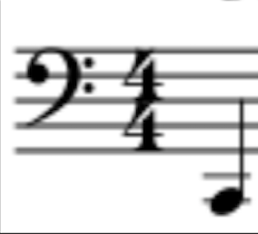

The Bass Clef is mainly used by Cellos and Basess. The scale below represents all the notes that a cello can play, with the Bass having the same notes, just sounding an octave lower
The Bass Clef or sometimes the F clef because the 2 dots wrap around the 4th line, or the letter F!
Click each note to learn more about them!!
